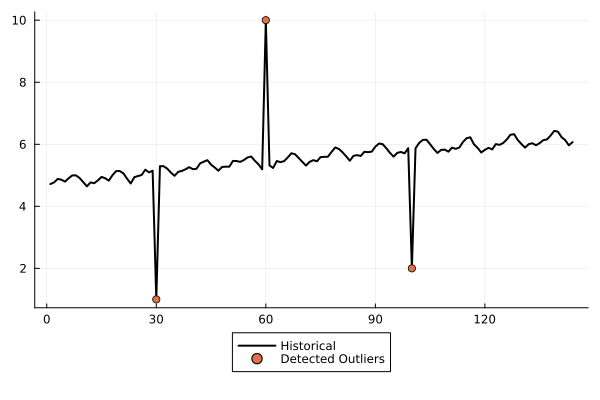

Extra Features
In addition to forecasting and scenario simulation, $StateSpaceLearning.jl$ provides several other functionalities, including component extraction, missing value inputation, outlier detection, and best subset selection.
Component Extraction
Quick example on how to perform component extraction in time series utilizing StateSpaceLearning.
using CSV
using DataFrames
using Plots
airp = CSV.File(StateSpaceLearning.AIR_PASSENGERS) |> DataFrame
log_air_passengers = log.(airp.passengers)
model = StructuralModel(log_air_passengers)
fit!(model)
level = model.output.components["μ1"]["Values"] + model.output.components["ξ"]["Values"]
slope = model.output.components["ν1"]["Values"] + model.output.components["ζ"]["Values"]
seasonal = model.output.components["γ1_12"]["Values"] + model.output.components["ω_12"]["Values"]
trend = level + slope
plot(trend, w=2 , color = "Black", lab = "Trend Component", legend = :outerbottom)
plot(seasonal, w=2 , color = "Black", lab = "Seasonal Component", legend = :outerbottom)
|  |
|  |
|
Missing Value Imputation
Quick example of completion of missing values for the air passengers time-series (artificial NaN values are added to the original time-series).
using CSV
using DataFrames
using Plots
airp = CSV.File(StateSpaceLearning.AIR_PASSENGERS) |> DataFrame
log_air_passengers = log.(airp.passengers)
airpassengers = AbstractFloat.(airp.passengers)
log_air_passengers[60:72] .= NaN
model = StructuralModel(log_air_passengers)
fit!(model)
fitted_completed_missing_values = ones(144).*NaN; fitted_completed_missing_values[60:72] = exp.(model.output.fitted[60:72])
real_removed_valued = ones(144).*NaN; real_removed_valued[60:72] = deepcopy(airp.passengers[60:72])
airpassengers[60:72] .= NaN
plot(airpassengers, w=2 , color = "Black", lab = "Historical", legend = :outerbottom)
plot!(real_removed_valued, lab = "Real Removed Values", w=2, color = "red")
plot!(fitted_completed_missing_values, lab = "Fit in Sample completed values", w=2, color = "blue")

Outlier Detection
Quick example of outlier detection for an altered air passengers time-series (artificial NaN values are added to the original time-series).
using CSV
using DataFrames
using Plots
airp = CSV.File(StateSpaceLearning.AIR_PASSENGERS) |> DataFrame
log_air_passengers = log.(airp.passengers)
log_air_passengers[60] = 10
log_air_passengers[30] = 1
log_air_passengers[100] = 2
model = StructuralModel(log_air_passengers)
fit!(model)
detected_outliers = findall(i -> i != 0, model.output.components["o"]["Coefs"])
plot(log_air_passengers, w=2 , color = "Black", lab = "Historical", legend = :outerbottom)
scatter!([detected_outliers], log_air_passengers[detected_outliers], lab = "Detected Outliers")

Best Subset Selection
Quick example on how to perform best subset selection in time series utilizing StateSpaceLearning.
using StateSpaceLearning
using CSV
using DataFrames
using Random
Random.seed!(2024)
airp = CSV.File(StateSpaceLearning.AIR_PASSENGERS) |> DataFrame
log_air_passengers = log.(airp.passengers)
X = rand(length(log_air_passengers), 10) # Create 10 exogenous features
β = rand(3)
y = log_air_passengers + X[:, 1:3]*β # add to the log_air_passengers series a contribution from only 3 exogenous features.
model = StructuralModel(y; exog = X)
fit!(model; α = 1.0, information_criteria = "bic", ϵ = 0.05, penalize_exogenous = true, penalize_initial_states = true)
Selected_exogenous = model.output.components["exog"]["Selected"]
In this example, the selected exogenous features were 1, 2, 3, as expected.